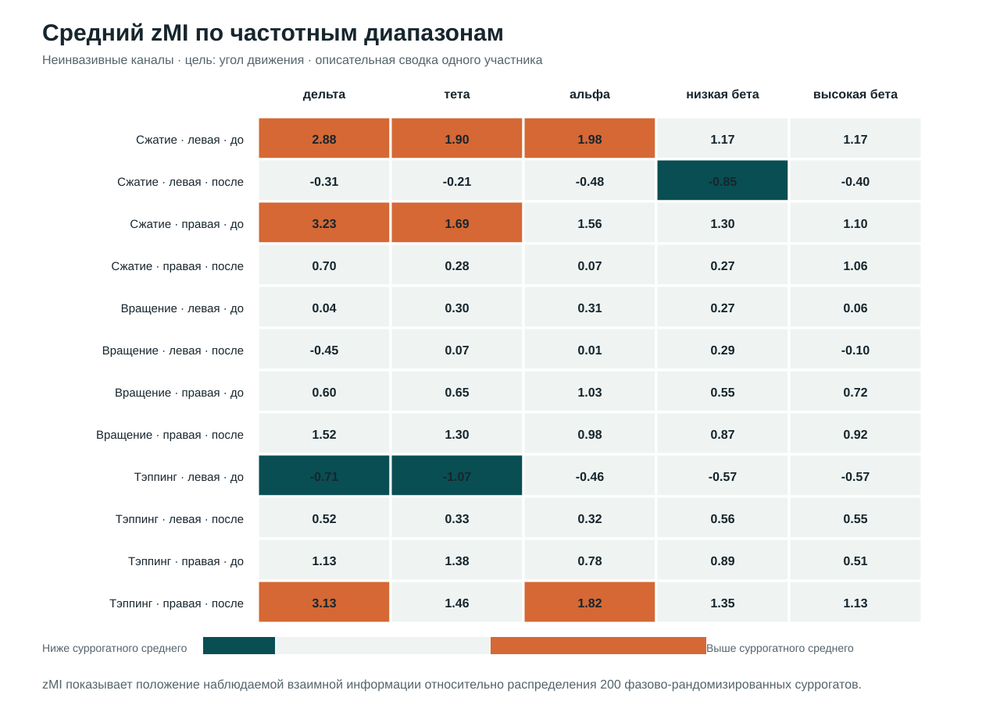
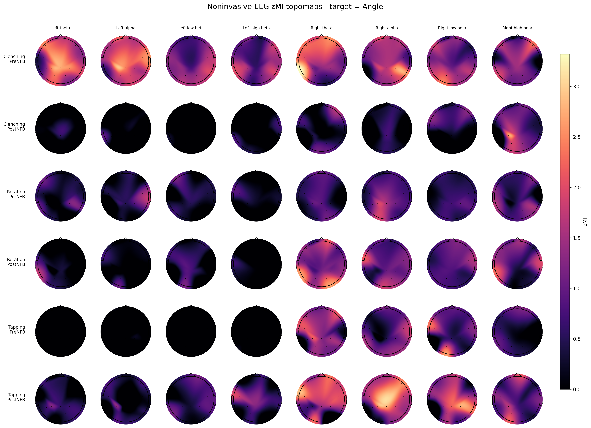

Технический пилот · Нейрофизиология · Временные ряды · Python
Связь нейронных сигналов с кинематикой движения
Я разработал воспроизводимый конвейер для поиска частотных диапазонов и каналов, огибающие которых связаны с углом или скоростью движения. Наблюдаемая взаимная информация сравнивалась с фазово-рандомизированными суррогатами.
01 / Исследовательский вопрос
Какие каналы и частотные диапазоны содержат информацию о движении?
Пилот был направлен на картирование возможных связей между непрерывной кинематикой и амплитудой нейронных колебаний. Он проверяет аналитический подход и формирует гипотезы для следующего исследования. Обучение предсказательной модели и проверка клинического эффекта в задачу не входили.
Исходные данные
Работа начиналась с подготовленных и синхронизированных многоканальных записей в формате FIF. Для анализа были доступны нейрофизиологические сигналы и непрерывные траектории угла и скорости движения.
Граница проекта. Сбор данных, клинический протокол и исходная очистка артефактов выполнялись до начала моей работы. Моя задача начиналась с проверки структуры файлов и проектирования вычислительного анализа.
02 / Метод
От синхронизированных рядов к суррогатно-нормированной взаимной информации
- Проверка структуры и синхронизации сигналов
- Ресэмплинг с 1000 до 250 Гц
- Полосовая фильтрация и огибающая Гильберта
- MI с углом или скоростью движения
- 200 суррогатов и расчёт zMI
Частотно-временное представление
Сигналы анализировались в перекрывающихся полосах шириной 3 Гц с шагом 1 Гц. После полосовой фильтрации амплитудная огибающая выделялась с помощью преобразования Гильберта. Перед снижением частоты дискретизации проверялось соблюдение критерия Найквиста.
Связь с движением
Для каждой пары «канал — частотная полоса» оценивалась взаимная информация между огибающей и кинематической переменной. MI позволяет обнаруживать статистическую зависимость, включая нелинейную, но сама по себе не задаёт направление или причинность связи.
Зачем нужны суррогаты. Абсолютный уровень MI зависит от частоты и свойств сигнала. Для построения контрольного распределения кинематический ряд 200 раз фазово рандомизировался: спектр сохранялся, а временная связь с нейронным сигналом разрушалась.
zMI = (MIobs − μsurr) / σsurr
Здесь MIobs — наблюдаемое значение, μsurr и σsurr — среднее и стандартное отклонение суррогатного распределения.
03 / Результаты пилота
Конвейер выявляет неоднородные частотные и пространственные профили
Расчёты завершились для всех запланированных сочетаний записи и кинематической цели. Нормирование относительно суррогатов уменьшило влияние частотно-зависимого фонового уровня MI и сделало карты удобнее для описательного сравнения.

Как читать zMI
Положительное значение означает, что наблюдаемая MI выше среднего по суррогатам; отрицательное — ниже. Величина выражена в стандартных отклонениях соответствующего контрольного распределения. Карта помогает находить сочетания канала и диапазона для последующей проверки.
Интерпретационная граница. Уровни zMI и доля полос выше условного порога использовались для визуальной навигации. Эти значения не являются скорректированными p-значениями. Разность показателей до и после воздействия также не рассматривалась как формальный статистический контраст.

04 / Реализация и личный вклад
Воспроизводимый расчёт отделён от построения отчёта
Что я делал
- проверил структуру предоставленных FIF-файлов;
- спроектировал частотную сетку и суррогатную нормализацию;
- реализовал расчёт MI и построение графиков на Python;
- распараллелил вычисления по каналам и частотным полосам;
- запустил пакетные расчёты, проверил их полноту и интерпретировал описательные результаты.
Аудит вычислений
Параметры, журналы выполнения, манифесты, численные результаты и итоговые рисунки сохранялись раздельно. Благодаря этому дорогостоящие вычисления можно проверять и переиспользовать без повторного запуска при каждом изменении отчёта.
05 / Статус работы
Технический пилот завершён
Что ограничивает выводы
- проанализированы данные одного участника за один день;
- не выполнялись популяционные выводы и коррекция множественных сравнений;
- нет формального парного сравнения условий;
- MI с временным лагом, SPoC и предсказательные модели не были реализованы.
Что потребовалось бы для подтверждающего исследования. Заранее определить основной статистический контраст, включить несколько участников и дней, отделить подтверждающий анализ от поиска гипотез и оценить воспроизводимость выбранных частотно-пространственных признаков.